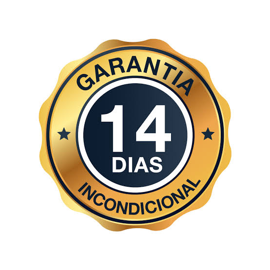
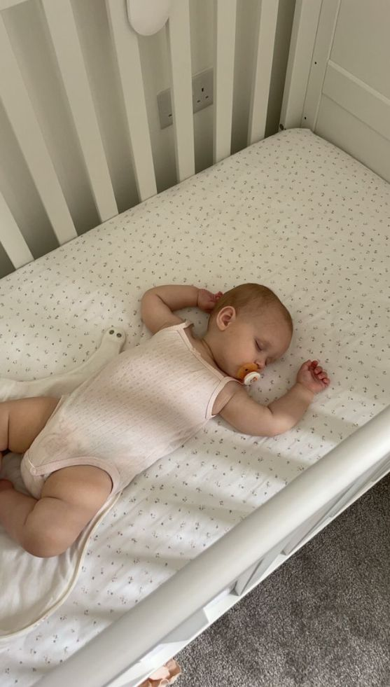
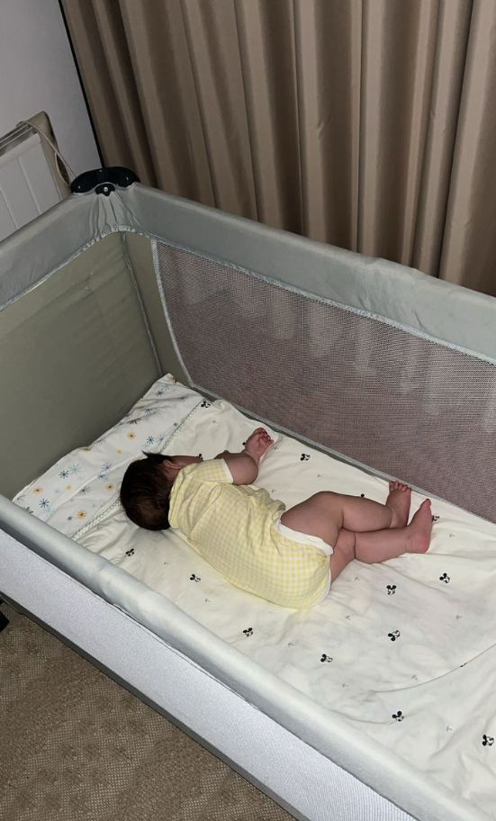
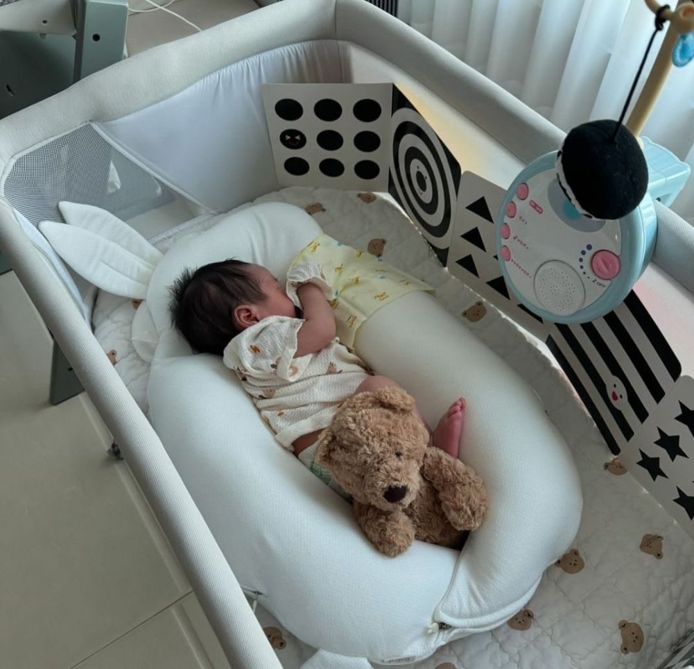
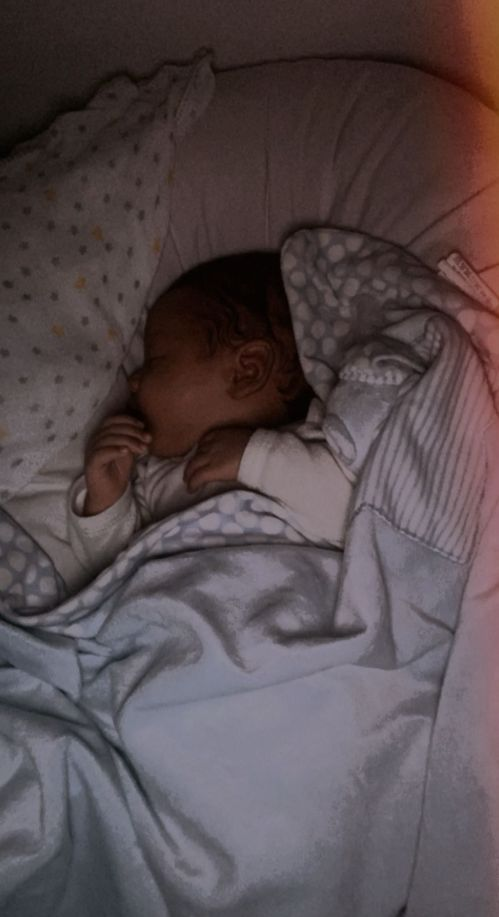
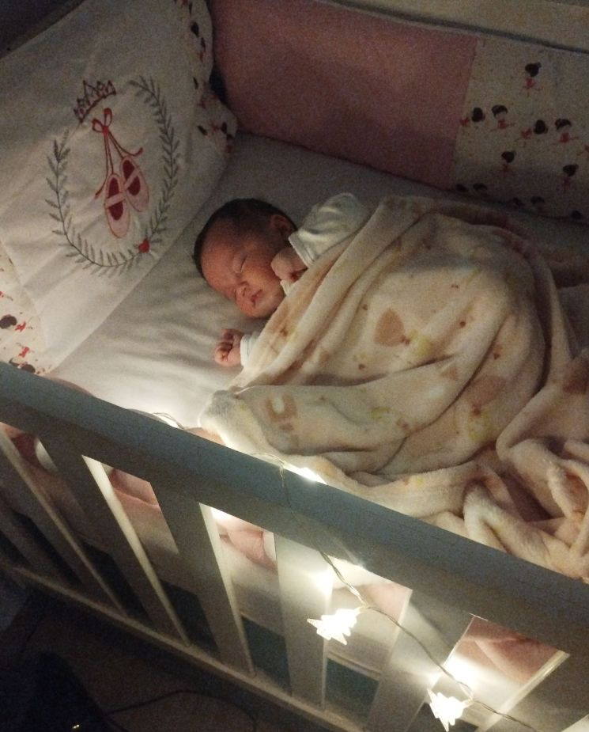

📦 ESTO ES TODO LO QUE RECIBES HOY:
PROTOCOLO NOCHES ENTERAS — el paso a paso completo de las 14 noches, calibrado para la edad de tu bebé (1 a 6 meses), con las tablas de ventanas de sueño, la guía de siestas y los ajustes para cólicos, reflujo y colecho
$497
🎁 BONO 1 — Lactancia Abundante: cómo aumentar tu producción de leche, extraer y almacenar — sin quitarle ninguna toma a tu bebé
$147
🎁 BONO 2 — Masajes para el Sueño: el paso a paso de alivio de cólicos, gases y estreñimiento — desde esta misma noche
$97
🎁 BONO 3 — Recordatorio de Cabecera: el checklist del sueño para aplicar HOY, antes incluso de la primera clase
$37
Valor total: más de $778

Garantía Duerme o Te Devuelvo — 14 noches
Aplica el protocolo durante 14 noches. Si el sueño de tu bebé no mejora — o si simplemente cambias de opinión — me escribes y te devuelvo el 100%. Sin preguntas, sin letra pequeña. El riesgo es mío. El sueño es tuyo.
Experiencias de quienes ya aplicaron el protocolo
★★★★★
"Mi hija tenía 5 meses y yo dormía en bloques de 40 minutos. Cuando leí 'asociación de sueño' pensé: ¿por qué NADIE me explicó esto antes? Hice el diagnóstico de la noche 1 y descubrí que la acostaba a dormir 1 hora después del punto justo. En la noche 4 durmió 6 horas seguidas. Me desperté asustada pensando que había pasado algo. Hoy, noche 16, duerme de 19:30 a 5:30. Yo me había rendido, de verdad. Menos mal que la garantía me dio el valor de intentarlo."

María Fernández
★★★★★
"Mi hijo tiene 3 meses y 7 kilos. SIETE. Dormía en mis brazos y yo pasaba 40 minutos con miedo de respirar. Lo ponía en la cuna... 5 minutos y se despertaba gritando. Pasaba el DÍA con él en brazos, se me bloqueó la muñeca, terminé en el traumatólogo. Pensé que la cuna era un lujo que mi hijo nunca iba a aceptar. El protocolo no me dijo que lo 'dejara ahí' — fue cambiando poco a poco, un paso por noche, yo a su lado todo el tiempo. En la noche 9 lo puse DESPIERTO en la cuna y él... se durmió. Solo. Lloré sentada en el suelo de la habitación. Hoy la siesta y la noche son en la cuna. Mi brazo volvió a ser mío."

Valeria Ortiz
★★★★★
"Mi bebé de 6 meses se despertaba 6, 7, a veces 8 veces por noche. Solo volvía a dormirse al pecho. Yo era un chupete humano y estaba llegando a mi límite — pero TODO método que encontraba hablaba de destete nocturno y yo no quería quitarle el pecho de ninguna manera, amamantar es sagrado para mí. Casi no lo compro por eso. Luego vi en las preguntas frecuentes que no hacía falta destetar y decidí probar por la garantía. Es verdad: sigue mamando muchísimo de día, mama 1 vez de madrugada (que es la que de verdad necesita) y VUELVE A DORMIRSE SOLA. La diferencia es que antes necesitaba el pecho para cada ciclo de sueño. Ahora el pecho es alimento, no muleta. Duermo 6 horas seguidas amamantando. Nadie me dijo que esto era posible."

Carmen López
★★★★★
"Yo estaba 100% en contra del entrenamiento de sueño. Para mí era todo crueldad disfrazada, dejar al bebé llorando solo en el cuarto para que 'aprenda'. Se lo dije a la amiga que me lo recomendó y ella: 'es al revés, no te alejas de él en NINGÚN momento'. Leí la página 3 veces buscando la trampa. No la había. Hice el protocolo con mi hijo de 4 meses y lo máximo que hubo fue un quejido de acomodo — de esos que ya hacía en mis propios brazos. Yo presente en cada noche, cada paso. En 13 noches ya dormía solo. Mi vínculo con él no cambió NADA, se despierta sonriendo. Para las madres que están en contra del llanto controlado como yo: es literalmente lo opuesto. Vigilo estas cosas como un halcón y lo firmo."

Daniela Navarro
★★★★★
"Mi hija DORMÍA TODA LA NOCHE desde los 2 meses. Yo me lucía, de verdad. Luego cumplió 4 meses y de la nada: despertar cada hora, lucha para dormir, siestas de 20 minutos. Pensé que eran los dientes, después que eran cólicos, después que era yo. Pasé 3 semanas esperando que 'la etapa pasara' y solo empeoraba. Con el protocolo entendí que la regresión de los 4 meses no es una etapa que pasa — es su sueño que maduró y AHORA necesitaba saber dormir sola, algo que nunca antes había necesitado. Tenía todo el sentido. Seguí el paso a paso y en 10 noches recuperé a mi dormilona — mejor que antes, porque ahora enlaza los ciclos sola. Si tu bebé 'se desajustó' de la nada: no esperes. Yo esperé 3 semanas que me costaron caro."

Laura García
Los resultados pueden variar.
Dentro de 14 noches vas a estar en uno de estos dos lugares: de pie, a las 3 de la madrugada, meciendo a tu bebé y esperando que "se le pase"... o durmiendo toda la noche, al lado de un bebé que aprendió a dormir solo. Sin una sola lágrima.
QUIERO EMPEZAR ESTA NOCHE →
P.D. — Protocolo completo + $281 en bonos por $49,90, con garantía de 14 noches. Lo pruebas durmiendo. Si no duermes, no pagas.